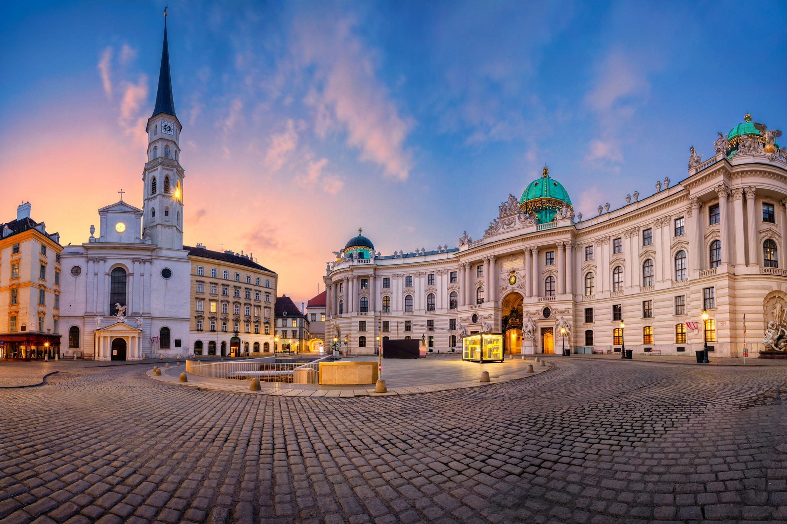
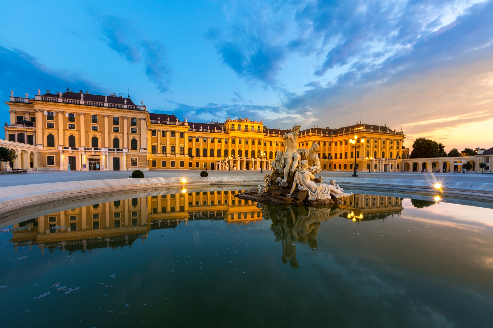
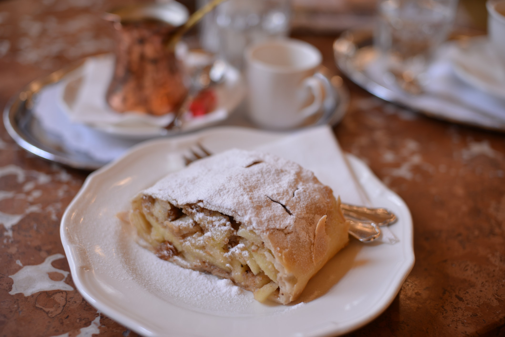

Keliauk ir tu!
Kelionė į Vieną
Tai yra savarankiškos kelionės idėja (tai reiškia, kad skrydį ir viešbutį rezervuosi atskirai).
Į pasiūlymo kainą įskaičiuotas skrydis ir viešbutis visai kelionės trukmei vienam asmeniui.
Papildomos paslaugos į kainą neįtrauktos.
Nepamiršk, kad į kelionę būtina pasiimti galiojančią asmens tapatybės kortelę arba pasą.
- Kaina:161
- Kelionės tikslas- Viena
- Nepamirškite paso ir bilietų
- Data:2020-02-07 – 2020-02-12
Ką nuveikti Vienoje?
- Pasivaikščiok Hofburge – didžiulę teritoriją miesto centre užimančių imperatorių rūmų teritorijoje.
- Pakilk Vienos apžvalgos ratu. Tai dar 1897 metais, švenčiant imperatoriaus jubiliejų, pastatytas apžvalgos ratas, kuriuo pakilus atsiveria puiki miesto ir Dunojaus panorama.
- Būtinai užsuk į tradicinę Vienos kavinukę išgerti puodelį kavos ir paragauti austriško štrudelio.
- Užsuk į miesto simboliu vadinamą Šv. Stepono katedrą – tai viena didžiausių ir gražiausių Austrijos bažnyčių.



Aurėja Lesvinčiūnaitė